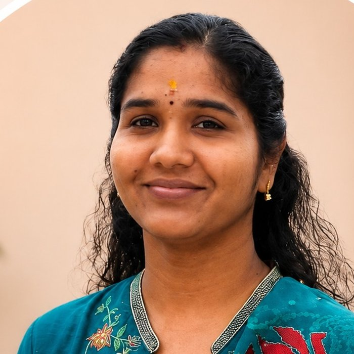
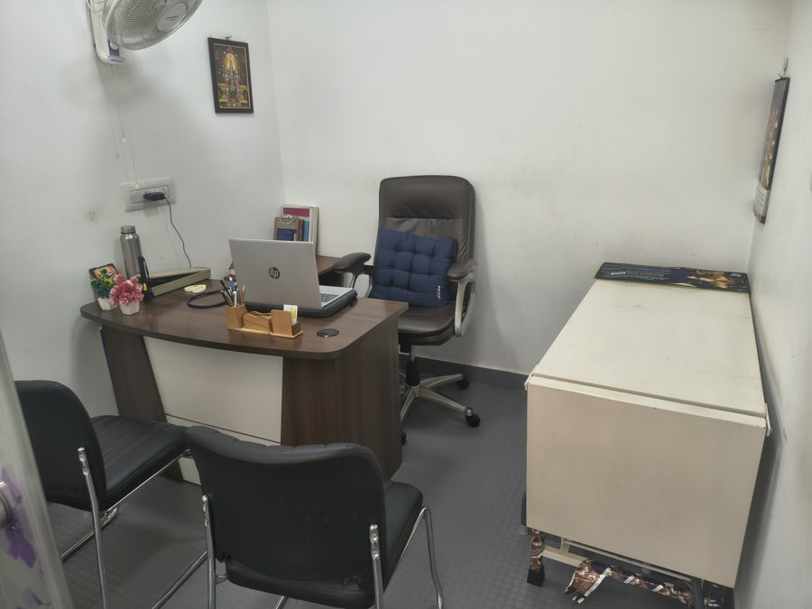
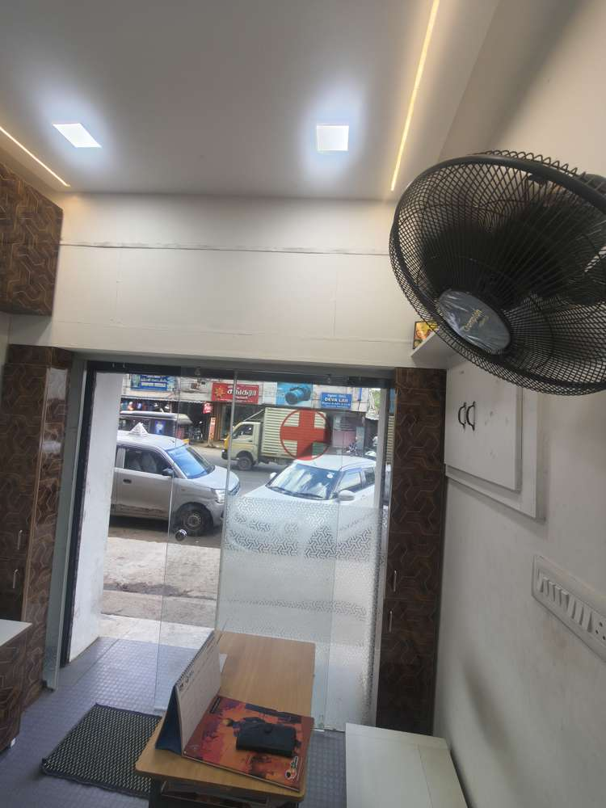

Structured care.
Complete privacy.
Zero judgement.
Our mission is simple — to make seeing a psychiatrist as normal as seeing any other doctor. Evidence-based treatment, explained in plain தமிழ் or English, planned with you. Not every consultation ends in medicine; every consultation ends with a plan.
- 5.0 rating on Google
- 100% confidential
- Video follow-ups from home

Mind and body, treated as one
“Our mission is to make seeing a psychiatrist as normal as seeing any other doctor — for every family in and around Madurai.”
MS Psychiatry Clinic is an independent outpatient psychiatry practice on Sivagangai Main Road, Karuppayurani, led by Dr. Monika M, MBBS, MD (Psychiatry). We treat the whole person, not just a symptom — your sleep, work, family, body and mind all belong in the conversation.
Every consultation is private, unhurried and in plain தமிழ் or English. Treatment follows evidence, is explained without jargon, and is decided with you — counselling, lifestyle changes, medicines, or a combination. And because getting to a clinic isn't always easy, follow-ups can happen over private video calls once we've met in person.

Whatever you're carrying, it has a name — and help
If any of these feel familiar, that's reason enough to visit. No referral needed.
Depression · மனச்சோர்வு
Sadness that won't lift, no interest in anything, tiredness all day.
Anxiety & overthinking · பதட்டம்
Mind that won't stop, constant worry, unable to relax.
Sleep problems · தூக்கமின்மை
Sleep that won't come, broken sleep, waking tired.
Panic attacks
Sudden fear, racing heartbeat, feeling of losing control.
Stress & burnout
Work pressure, mental exhaustion, short temper at home.
OCD
Thoughts that repeat, checking or washing again and again.
De-addiction · போதை மீட்பு
Alcohol, smoking or mobile use that's gone past your control.
Women's mental health
Mood changes after delivery, monthly mood swings, feeling overwhelmed.
Unexplained body pains
Aches, tiredness or discomfort when every test comes back normal.
Focus & hyperactivity
Can't sit still, poor concentration, school complaints.
Behaviour & mood changes
Sudden anger, withdrawal, refusing school.
Exam stress
Fear of exams, blanking out, pressure that's become too much.
Mobile & gaming overuse
Screens taking over sleep, studies and family time.
A parent or guardian always joins the consultation for anyone under 18.
Memory problems · மறதி
Forgetting names and places, repeating questions, losing things.
Loneliness & low mood
Withdrawn, tearful, no interest in food or family.
Sleep changes
Awake at night, sleepy all day, restlessness.
Suspicion & confusion
New suspiciousness, talking to self, seeing or hearing things.
Not sure which of these fits? That's normal — describing what you feel is enough. Call and we'll take it from there.
What actually happens here
Most people are nervous before their first visit. Here's exactly what to expect — no surprises.
-
1
You talk, we listen
A private, unhurried conversation about what you're going through — in Tamil or English.
-
2
We understand together
The doctor assesses what's happening and explains it in plain words — no jargon, no judgement.
-
3
A plan made with you
Counselling, medicines, lifestyle changes or a mix — decided together, openly.
-
4
Follow-up, your way
Review visits at the clinic — or by private video call from home once the doctor knows you.
Care that respects your privacy and your intelligence
Completely confidential
Enclosed rooms, records protected by law, nothing shared without your consent — including the fact that you came.
No judgement, ever
Whatever brings you here, you'll be met with respect. Seeking help is strength.
Evidence-based care
Treatment follows science, not habit. If counselling or lifestyle change is enough, that's the plan.
Family involved — your choice
Caregivers are welcome, and what's shared with them is always decided by you.
Visit once. Follow up from home.
After your first in-person consultation, reviews and medicine adjustments can happen over a private video call — no travel, no waiting room, prescription on your phone. Some medicines can't be prescribed online under telemedicine rules; the doctor will guide you.

Dr. Monika M
MBBS, MD (Psychiatry) · Consultant Psychiatrist
Dr. Monika treats adult, adolescent and elder mental health — depression, anxiety, sleep difficulties, OCD, de-addiction and women's mental health — with a calm, unhurried consultation style. She believes the first prescription is always listening.
- Consultations in தமிழ் and English
- Child & adolescent behavioural concerns seen with parents
- Video follow-ups for reviews once you've met in person
Visit us · நேரம்
| Psychiatry OPD (walk-in & appointment) | 4:00 – 9:00 PM |
|---|---|
| Video follow-ups | By appointment |
| Monday – Saturday | Sunday closed |
- 97513 93393 · 79044 48593
- V.V.A Complex, Seeman Nagar, Karuppayurani, Madurai 625020
- @drmonikapsychiatrist
On Sivagangai Main Road
Opposite Deva Lab — look for the red cross on the glass front at V.V.A Complex. Two-wheeler parking outside the clinic.
Buses toward Karuppayurani stop within a short walk; autos know "Seeman Nagar, V.V.A Complex".

“The doctors here are very welcoming and friendly. Highly preferable for psychiatric consultation and general consultation.”
— Google review
“The office is always exceptionally clean, hygienic and comfortable, which instantly puts you at ease.”
— Google review
“It's in a great location that is very easy to reach. Highly satisfied with the service.”
— Google review
Visited us? Share your experience on Google — it helps others find care.
Before your first visit
Is my visit really confidential?
Completely. Mental-health records are confidential by law, consultation rooms are enclosed, and nothing about your visit — including the fact that you came — is shared with anyone without your consent.
Will I definitely be put on medicines?
No. Treatment is planned after understanding you — sometimes it's counselling, sometimes lifestyle changes, sometimes medicines, often a combination. If medicines are advised, the reasons, duration and side effects are explained openly, and the decision is made with you.
Do I need an appointment?
Walk-ins are welcome during OPD hours, but a quick call or WhatsApp to 97513 93393 saves you waiting time.
Can I consult online instead of coming in?
The first consultation is in person — that's both good medicine and what telemedicine rules require for many treatments. After that, follow-ups can happen over private video calls, with prescriptions sent to your phone.
Do you see children and teenagers?
Yes — focus and behaviour concerns, exam stress, screen overuse and mood changes. A parent or guardian always joins the consultation for anyone under 18.
What should I bring for the first visit?
Any previous prescriptions or reports if you have them. If you don't, that's fine — just come. Describing what you're feeling is enough to begin.
What if someone is in crisis right now?
If someone has harmed themselves or is in immediate danger, go to the nearest hospital casualty now. For urgent emotional support anywhere in India, call Tele-MANAS 14416 — the Government of India's free, 24×7 mental-health helpline in Tamil and English. Then let us help with ongoing care.